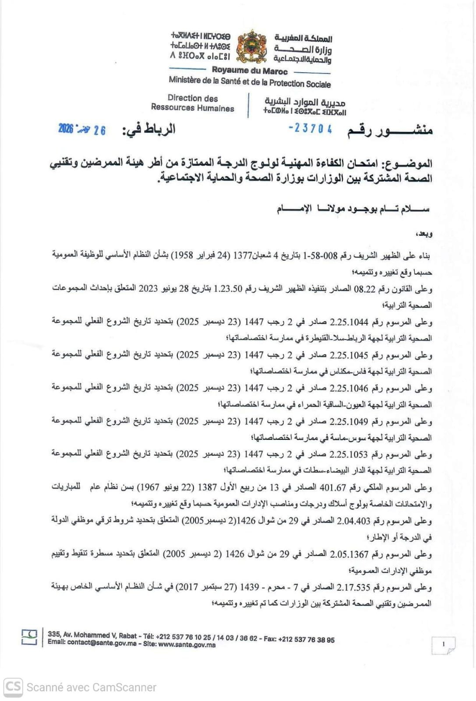

امتحان الكفاءة المهنية لولوج الدرجة الممتازة يوم 20 دجنبر 2026: الشروط والمناصب وآجال الترشيح

أصدرت وزارة الصحة والحماية الاجتماعية (مديرية الموارد البشرية) المنشور رقم 23704 بتاريخ 26 نونبر 2026، المتعلق بتنظيم امتحان الكفاءة المهنية لولوج الدرجة الممتازة من أطر هيئة الممرضين وتقنيي الصحة المشتركة بين الوزارات.
📅 تاريخ الامتحان: الأحد 20 دجنبر 2026، على الساعة التاسعة صباحاً.
📍 مراكز الامتحان: وجدة، تطوان، الرباط، الدار البيضاء، فاس، مراكش، بني ملال، أكادير، كلميم، الرشيدية، العيون، وادي الذهب، والملحقات التابعة لها.
• شروط المشاركة: يُفتح الامتحان في وجه الممرضين وتقنيي الصحة من الدرجة الأولى المتوفرين على ست (6) سنوات على الأقل من الخدمة الفعلية بدرجتهم عند تاريخ إجراء الامتحان.
• المناصب المفتوحة: - الموظفون التابعون لوزارة الصحة والحماية الاجتماعية: 368 للممرضين، 123 للقابلات، 79 لتقنيي الصحة، 41 للمروضين، 17 للمساعدين في المجال الطبي الاجتماعي. - الموظفون المنقولون إلى المجموعات الصحية الترابية (ممرضون / قابلات / تقنيو الصحة / مروضون / مساعدون في المجال الطبي الاجتماعي): الرباط-سلا-القنيطرة: 88 / 30 / 29 / 12 / 5 فاس-مكناس: 107 / 51 / 25 / 10 / 6 العيون-الساقية الحمراء: 12 / 4 / 2 / 2 / 1 سوس-ماسة: 74 / 27 / 17 / 8 / 5 الدار البيضاء-سطات: 93 / 26 / 25 / 11 / 3
• الاختبارات: اختبار كتابي (أسئلة متعددة الاختيارات حول المهام المرتبطة بكل إطار، مدته ساعتان، المعامل 2)، واختبار تطبيقي (أسئلة مباشرة أو متعددة الاختيارات مرتبطة بالتخصصات، مدته ساعتان، المعامل 2). وتُعتبر إقصائية كل نقطة تقل عن 5 من 20، وتضاف إلى معدل الاختبارين نقطة مهنية عددية تطابق معدل نقط السنوات الست المطلوبة. ويُشترط للنجاح الحصول على نقطة نهائية لا تقل عن 10 من 20 دون نقطة إقصائية.
• إيداع الترشيحات: يملأ المترشح طلب الترشيح ويسلمه للمندوبية أو المنطقة الصحية التابع لها (أو لوحدة الإدارة المركزية بالنسبة للمستوى المركزي)، قصد رقنه في التطبيق المعلوماتي application.sante.gov.ma/eap، ويتسلم وصلاً يؤكد ترشيحه. ويتعين على العاملين بالمراكز الاستشفائية الجامعية إيداع طلباتهم بالمندوبية أو المنطقة الصحية التي يتواجد بنفوذها الترابي المركز الاستشفائي الجامعي.
⏳ آخر أجل لإيداع الترشيحات: الثلاثاء 15 دجنبر 2026. ⏳ آخر أجل لتأكيد الترشيحات من طرف المندوبيات عبر التطبيق: الأربعاء 16 دجنبر 2026.
كل موظف تتوفر فيه الشروط ولم يتقدم بطلب ترشيحه داخل الأجل القانوني لن يُسمح له بالمشاركة في الامتحان. وتُنشر لوائح المترشحين المدعوين، التي تعتبر بمثابة استدعاء، على الموقع الإلكتروني للوزارة www.sante.gov.ma، وتصبح نهائية بعد يومين من نشرها.
تدعو النقابة المستقلة للممرضين وتقنيي الصحة كافة الزميلات والزملاء المعنيين إلى إيداع ترشيحاتهم في الآجال المحددة، والتأكد من رقنها وتسلّم وصل الترشيح، والتواصل مع مكاتبها المحلية والإقليمية عند أي إشكال. بالتوفيق للجميع.
فتح في تطبيق النقابة